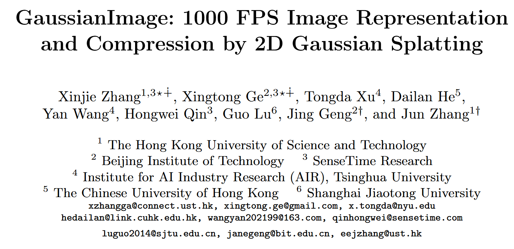
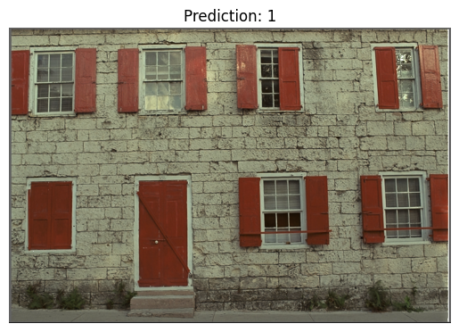
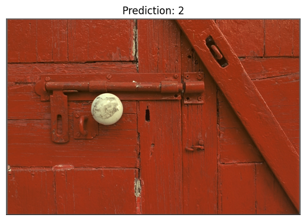
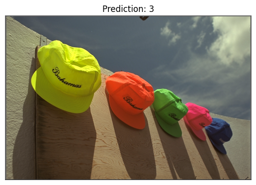

From Paper to Code: Understanding and Reproducing “GaussianImage: 1000 FPS Image Representation and Compression by 2D Gaussian Splatting”#
 Code: GitHub Repository, Source Code in My Repo: ../../../code/GS/GaussianImage-main/train.py
Paper Reading Notes#
1. Highlights#
This work transitions 3D Gaussian Splatting (3DGS) into a 2D formulation, specifically for single-image representation and compression. It inherits key advantages of 3DGS—such as high rendering quality and parallelism—while eliminating the need for camera parameters or depth sorting.
Comparison: 3DGS vs. GaussianImage#
Feature |
3D Gaussian Splatting (3DGS) |
GaussianImage (2D) |
|---|---|---|
Rendering Method |
Depth-sorted Alpha Blending |
Order-free Accumulated Summation |
Depth Required |
✅ Yes |
❌ No |
Parallelism |
❌ Sequential (depends on order) |
✅ Fully parallel |
Use Case |
3D view synthesis |
2D image representation & compression |
Gaussian Parameters |
59 per Gaussian |
8 per Gaussian |
2. Background#
Implicit neural representations (INRs) have recently gained popularity in image processing. These methods represent images as continuous functions, often modeled by MLPs, that map spatial coordinates \((x, y)\) to RGB values.
Notable methods like SIREN [1] and WIRE [2] show impressive results in terms of image fidelity.
Recently, 3D Gaussian Splatting [5] has been proposed in the context of 3D scene reconstruction, providing fast and visually high-quality rendering by explicitly modeling 3D Gaussians. This work inspires Method Overview of GaussianImage, which brings this approach to 2D image representation and compression.
2. Method Overview#
Pipeline
Input a high-resolution image (usually in full resolution);
Optimize (overfit) a set of 2D Gaussians to represent the image;
Store these Gaussian parameters as a compressed representation;
When needed for display or reconstruction, render the image from these parameters at 2000 FPS.
GaussianImage replaces MLP-based INRs with a set of 2D Gaussians. Each image is represented as a sum of weighted Gaussian functions in 2D space. Every Gaussian is defined by:
Position \(\mu \in \mathbb{R}^2\)
Covariance matrix \(\Sigma \in \mathbb{R}^{2 \times 2}\)
Weighted color coefficient \(c' \in \mathbb{R}^3\)
2.1 Covariance matrix factorization#
The covariance matrix defines the shape, orientation, and scale of a 2D Gaussian.
It determines how the Gaussian spreads in space, allowing it to adapt to local image structures.
Using a full covariance matrix enables anisotropic and rotated blobs, which are essential for accurately fitting complex image regions.
To ensure the covariance matrix \(\Sigma\) is always positive semi-definite, GaussianImage uses Cholesky decomposition:
This makes optimization stable and avoids invalid \(\Sigma\) values during training.
➡️ Compared to 3DGS’s rotation-scaling factorization, Cholesky is simpler and compression-friendly.
2.2 Accumulated Blending#
3D Gaussian Splatting (3DGS) uses alpha blending:
Needs depth sorting
Requires camera parameters
Sequential, not parallel
But 2D images have no depth. GaussianImage instead uses accumulated summation:
No need to sort. Fully parallel. Order-invariant. Faster and more stable.
➡️ This change enables 2000+ FPS rendering and simplifies compression.
References#
[1] Sitzmann et al., “Implicit Neural Representations with Periodic Activation Functions”, NeurIPS 2020
[2] Saragadam et al., “WIRE: Wavelet Implicit Neural Representations”, CVPR 2023
[3] Müller et al., “Instant Neural Graphics Primitives”, SIGGRAPH 2022
[4] Chen et al., “NeuRBF: Neural Fields with Radial Basis Functions”, ICCV 2023
[5] Kerbl et al., “3D Gaussian Splatting for Real-Time Radiance Field Rendering”, SIGGRAPH 2023
[6] Townsend et al., “Practical Lossless Compression with Latent Variables using Bits-Back Coding”, arXiv 2019
Code Reproduction with Explanation:#
import os
import sys
print("Current working directory:", os.getcwd())
target_path = os.path.abspath(os.path.join(os.getcwd(), "../../../code/GS/GaussianImage-main"))
print("Appending path:", target_path)
sys.path.insert(0, target_path)
import math
import time
from pathlib import Path
import argparse
import yaml
import numpy as np
import torch
import sys
from PIL import Image
import torch.nn.functional as F
from pytorch_msssim import ms_ssim as ms_ssim_func
from utils import *
from tqdm import tqdm
import random
import torchvision.transforms as transforms
import matplotlib.pyplot as plt
Current working directory: /home/xqgao/2025/MIT/Awesome-Computational-Imaging/chapters/Chapter05_Gaussian_Image
Appending path: /home/xqgao/2025/MIT/code/GS/GaussianImage-main
SimpleTrainer2d is designed to train a set of learnable 2D Gaussians to approximate a given image. It supports different Gaussian formulations such as Cholesky, Rotation-Scaling, and 3DGS, and takes care of everything from loading the image and initializing the model, to training over a specified number of iterations and evaluating performance using PSNR and MS-SSIM. The final goal is to represent the image efficiently using a compact set of parameterized Gaussians, while optionally saving the output and logging the process.
class SimpleTrainer2d:
"""Trains random 2d gaussians to fit an image."""
def __init__(
self,
image_path: Path,
num_points: int = 2000,
model_name:str = "GaussianImage_Cholesky",
iterations:int = 30000,
model_path = None,
args = None,
):
self.device = torch.device("cuda:0")
self.gt_image = image_path_to_tensor(image_path).to(self.device)
self.num_points = num_points
image_path = Path(image_path)
self.image_name = image_path.stem
BLOCK_H, BLOCK_W = 16, 16
self.H, self.W = self.gt_image.shape[2], self.gt_image.shape[3]
self.iterations = iterations
self.save_imgs = args.save_imgs
self.log_dir = Path(f"../../../code/GS/GaussianImage-main/checkpoints/{args.data_name}/{model_name}_{args.iterations}_{num_points}/{self.image_name}")
if model_name == "GaussianImage_Cholesky":
from gaussianimage_cholesky import GaussianImage_Cholesky
self.gaussian_model = GaussianImage_Cholesky(loss_type="L2", opt_type="adan", num_points=self.num_points, H=self.H, W=self.W, BLOCK_H=BLOCK_H, BLOCK_W=BLOCK_W,
device=self.device, lr=args.lr, quantize=False).to(self.device)
elif model_name == "GaussianImage_RS":
from gaussianimage_rs import GaussianImage_RS
self.gaussian_model = GaussianImage_RS(loss_type="L2", opt_type="adan", num_points=self.num_points, H=self.H, W=self.W, BLOCK_H=BLOCK_H, BLOCK_W=BLOCK_W,
device=self.device, lr=args.lr, quantize=False).to(self.device)
elif model_name == "3DGS":
from gaussiansplatting_3d import Gaussian3D
self.gaussian_model = Gaussian3D(loss_type="Fusion2", opt_type="adan", num_points=self.num_points, H=self.H, W=self.W, BLOCK_H=BLOCK_H, BLOCK_W=BLOCK_W,
device=self.device, sh_degree=args.sh_degree, lr=args.lr).to(self.device)
self.logwriter = LogWriter(self.log_dir)
if model_path is not None:
print(f"loading model path:{model_path}")
checkpoint = torch.load(model_path, map_location=self.device)
model_dict = self.gaussian_model.state_dict()
pretrained_dict = {k: v for k, v in checkpoint.items() if k in model_dict}
model_dict.update(pretrained_dict)
self.gaussian_model.load_state_dict(model_dict)
def train(self):
psnr_list, iter_list = [], []
progress_bar = tqdm(range(1, self.iterations+1), desc="Training progress")
best_psnr = 0
self.gaussian_model.train()
start_time = time.time()
for iter in range(1, self.iterations+1):
loss, psnr = self.gaussian_model.train_iter(self.gt_image)
psnr_list.append(psnr)
iter_list.append(iter)
end_time = time.time() - start_time
progress_bar.close()
psnr_value, ms_ssim_value = self.test()
with torch.no_grad():
self.gaussian_model.eval()
test_start_time = time.time()
for i in range(100):
_ = self.gaussian_model()
test_end_time = (time.time() - test_start_time)/100
self.logwriter.write("Training Complete in {:.4f}s, Eval time:{:.8f}s, FPS:{:.4f}".format(end_time, test_end_time, 1/test_end_time))
torch.save(self.gaussian_model.state_dict(), self.log_dir / "gaussian_model.pth.tar")
np.save(self.log_dir / "training.npy", {"iterations": iter_list, "training_psnr": psnr_list, "training_time": end_time,
"psnr": psnr_value, "ms-ssim": ms_ssim_value, "rendering_time": test_end_time, "rendering_fps": 1/test_end_time})
return psnr_value, ms_ssim_value, end_time, test_end_time, 1/test_end_time
def test(self):
self.gaussian_model.eval()
with torch.no_grad():
out = self.gaussian_model()
mse_loss = F.mse_loss(out["render"].float(), self.gt_image.float())
psnr = 10 * math.log10(1.0 / mse_loss.item())
ms_ssim_value = ms_ssim_func(out["render"].float(), self.gt_image.float(), data_range=1, size_average=True).item()
self.logwriter.write("Test PSNR:{:.4f}, MS_SSIM:{:.6f}".format(psnr, ms_ssim_value))
#if self.save_imgs:
transform = transforms.ToPILImage()
img = transform(out["render"].float().squeeze(0))
# Save image
name = self.image_name + "_fitting.png"
# img.save(str(self.log_dir / name))
# Show image with matplotlib
plt.imshow(img)
plt.title(f"Prediction: {self.image_name}")
plt.axis("off")
plt.show()
return psnr, ms_ssim_value
def image_path_to_tensor(image_path: Path):
img = Image.open(image_path)
transform = transforms.ToTensor()
img_tensor = transform(img).unsqueeze(0) #[1, C, H, W]
return img_tensor
def parse_args(argv):
parser = argparse.ArgumentParser(description="Example training script.")
parser.add_argument(
"-d", "--dataset", type=str, default='../../../Datasets/Kodak', help="Training dataset"
)
parser.add_argument(
"--data_name", type=str, default='kodak', help="Training dataset"
)
parser.add_argument(
"--iterations", type=int, default=5000, help="number of training epochs (default: %(default)s)"
)
parser.add_argument(
"--model_name", type=str, default="GaussianImage_Cholesky", help="model selection: GaussianImage_Cholesky, GaussianImage_RS, 3DGS"
)
parser.add_argument(
"--sh_degree", type=int, default=3, help="SH degree (default: %(default)s)"
)
parser.add_argument(
"--num_points",
type=int,
default=50000,
help="2D GS points (default: %(default)s)",
)
parser.add_argument("--model_path", type=str, default=None, help="Path to a checkpoint")
parser.add_argument("--seed", type=float, default=1, help="Set random seed for reproducibility")
parser.add_argument("--save_imgs", action="store_true", help="Save image")
parser.add_argument(
"--lr",
type=float,
default=1e-3,
help="Learning rate (default: %(default)s)",
)
args = parser.parse_args(argv)
return args
main(argv): Batch Image Training and Evaluation
This function runs SimpleTrainer2d on an entire dataset (e.g., Kodak or DIV2K). For each image, it trains a set of 2D Gaussians to minimize L2 loss and logs metrics such as PSNR, MS-SSIM, training time, and FPS. All results are saved using LogWriter, and the script computes the average performance across all images to evaluate model quality and speed.
argv=sys.argv[1:]
args = parse_args([])
# Cache the args as a text string to save them in the output dir later
args_text = yaml.safe_dump(args.__dict__, default_flow_style=False)
if args.seed is not None:
torch.manual_seed(args.seed)
random.seed(args.seed)
torch.cuda.manual_seed(args.seed)
torch.backends.cudnn.deterministic = True
torch.backends.cudnn.benchmark = False
np.random.seed(args.seed)
logwriter = LogWriter(Path(f"./checkpoints/{args.data_name}/{args.model_name}_{args.iterations}_{args.num_points}"))
psnrs, ms_ssims, training_times, eval_times, eval_fpses = [], [], [], [], []
image_h, image_w = 0, 0
if args.data_name == "kodak":
image_length, start = 3, 0
elif args.data_name == "DIV2K_valid_LRX2":
image_length, start = 100, 800
for i in range(start, start+image_length):
if args.data_name == "kodak":
image_path = Path(args.dataset) / f'{i+1}.png'
elif args.data_name == "DIV2K_valid_LRX2":
image_path = Path(args.dataset) / f'{i+1:04}x2.png'
trainer = SimpleTrainer2d(image_path=image_path, num_points=args.num_points,
iterations=args.iterations, model_name=args.model_name, args=args, model_path=args.model_path)
psnr, ms_ssim, training_time, eval_time, eval_fps = trainer.train()
psnrs.append(psnr)
ms_ssims.append(ms_ssim)
training_times.append(training_time)
eval_times.append(eval_time)
eval_fpses.append(eval_fps)
image_h += trainer.H
image_w += trainer.W
image_name = image_path.stem
logwriter.write("{}: {}x{}, PSNR:{:.4f}, MS-SSIM:{:.4f}, Training:{:.4f}s, Eval:{:.8f}s, FPS:{:.4f}".format(
image_name, trainer.H, trainer.W, psnr, ms_ssim, training_time, eval_time, eval_fps))
avg_psnr = torch.tensor(psnrs).mean().item()
avg_ms_ssim = torch.tensor(ms_ssims).mean().item()
avg_training_time = torch.tensor(training_times).mean().item()
avg_eval_time = torch.tensor(eval_times).mean().item()
avg_eval_fps = torch.tensor(eval_fpses).mean().item()
avg_h = image_h//image_length
avg_w = image_w//image_length
logwriter.write("Average: {}x{}, PSNR:{:.4f}, MS-SSIM:{:.4f}, Training:{:.4f}s, Eval:{:.8f}s, FPS:{:.4f}".format(
avg_h, avg_w, avg_psnr, avg_ms_ssim, avg_training_time, avg_eval_time, avg_eval_fps))
/home/xqgao/anaconda3/envs/inr/lib/python3.12/site-packages/jaxtyping/__init__.py:231: UserWarning: jaxtyping version >=0.2.23 should be used with Equinox version >=0.11.1
warnings.warn(
Training progress: 0%| | 0/5000 [00:07<?, ?it/s]
Test PSNR:37.0133, MS_SSIM:0.997281

Training Complete in 7.0003s, Eval time:0.00077572s, FPS:1289.1311
1: 512x768, PSNR:37.0133, MS-SSIM:0.9973, Training:7.0003s, Eval:0.00077572s, FPS:1289.1311
Training progress: 0%| | 0/5000 [00:06<?, ?it/s]
Test PSNR:39.8294, MS_SSIM:0.994522

Training Complete in 6.8770s, Eval time:0.00032370s, FPS:3089.2943
2: 512x768, PSNR:39.8294, MS-SSIM:0.9945, Training:6.8770s, Eval:0.00032370s, FPS:3089.2943
Training progress: 0%| | 0/5000 [00:06<?, ?it/s]
Test PSNR:43.2735, MS_SSIM:0.997530

Training Complete in 6.6995s, Eval time:0.00041715s, FPS:2397.1972
3: 512x768, PSNR:43.2735, MS-SSIM:0.9975, Training:6.6995s, Eval:0.00041715s, FPS:2397.1972
Average: 512x768, PSNR:40.0387, MS-SSIM:0.9964, Training:6.8589s, Eval:0.00050552s, FPS:2258.5410
This is the Kodak dataset; as shown, the inference is indeed very fast, and the results are impressive.